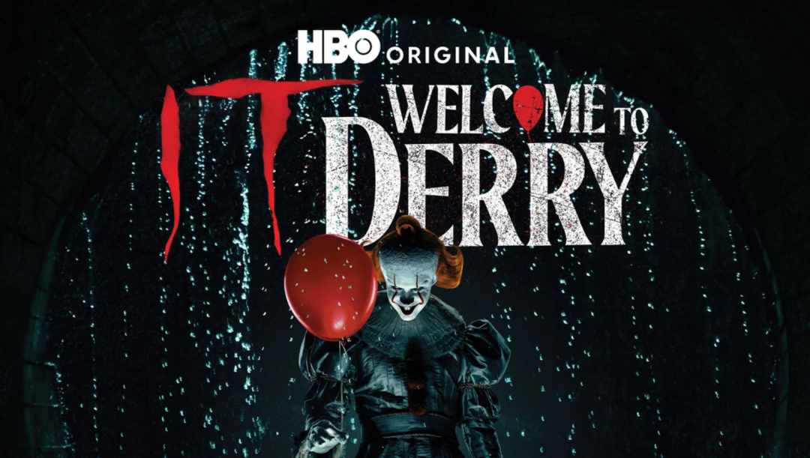
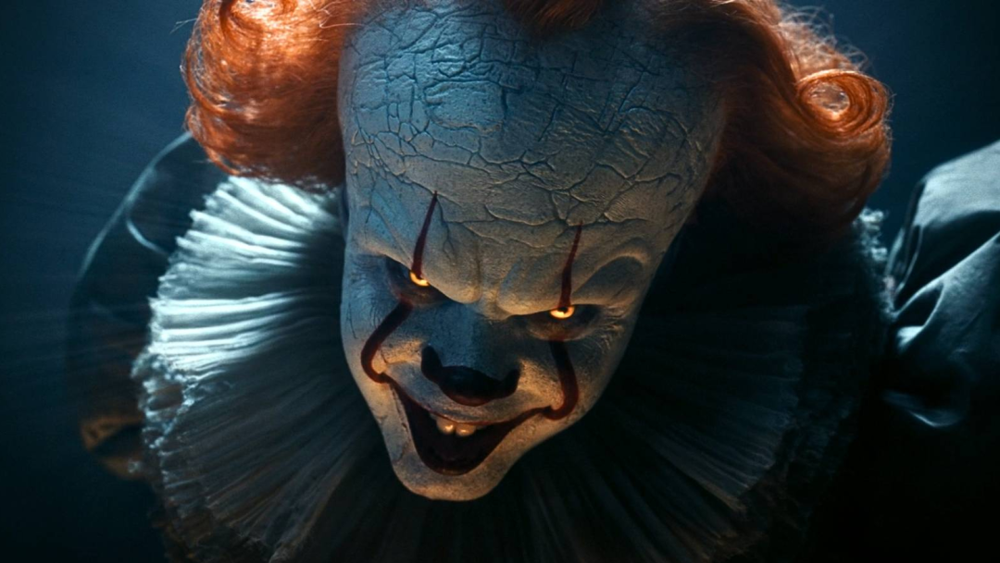
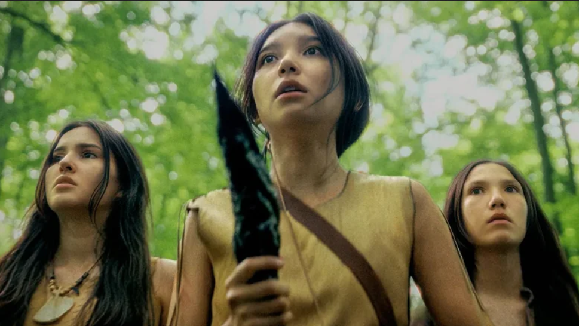

德里镇的雾，又起来了。
就在这两天，HBO 正式确认：恐怖剧集《小丑回魂：欢迎来到德里镇》（It: Welcome to Derry）已续订第二季，共8集，并锁定 2027 年回归。消息一出，粉丝们终于可以放心期待了。

看过《小丑回魂》两部电影的观众，对德里小镇、邪恶的潘尼怀斯小丑一定不会陌生。不同于电影里 “失败者俱乐部” 少年们的冒险故事，《小丑回魂：欢迎来到德里镇》是电影的前传作品。
第一季的故事设定在1962年的德里镇，讲述了潘尼怀斯（Pennywise）与小镇居民之间早期的恐怖交锋。
而第二季将直接倒回27年前：1935年，美国大萧条时期。核心聚焦斯蒂芬·金原著中被不少读者忽略的布拉德利帮大屠杀事件：一群银行劫匪在流窜途中停靠德里镇，在镇上购买枪支弹药，原本只想歇脚、补给，最终却遭遇了匪夷所思的恐怖。
换句话说，这一次被推到台前的不是"小丑追小孩"的经典套路，而是一群荷枪实弹的亡命之徒，撞上了德里镇真正的"规则"。硬汉遇上未知，这比单纯的鬼怪更让人发毛。

最让影迷兴奋的是主创自己的形容，把这段布拉德利帮的剧情比作："一部华纳兄弟的黑帮片，只不过镜头透过潘尼怀斯的眼睛拍摄"。
这个类比信息量巨大：它意味着第二季不只是又一批受害者排队送人头，而是要把上世纪三十年代那种枪战、劫案、亡命徒硬碰硬的质感，和克苏鲁式的未知恐惧放在一起。你能想象《教父》《好家伙》的紧张节奏，撞上一个专门收割恐惧的远古恶魔是什么画面吗？这就是 HBO 想给你看的东西。
在官宣前后，剧照与片场信息已经抢先流出。第二季的片场照首次曝光了1935年版本的全新德里镇布景，复古街景一亮相，就让粉丝看到了潘尼怀斯"新地盘"的雏形。
而在正式续订之外，这部剧也没让粉丝等太久。在开播满一周年的节点，官方于万圣节当天推出了30分钟的特别篇《小丑回魂：德里故事》，让德里镇再度回归，刚好给等待第二季的观众解了解馋。

第一季已经带我们领略了1962年的德里镇，第二季将深入1935年的大萧条，如果续订第三季，观众还有望看到1908年原著中那段更古老的插曲。